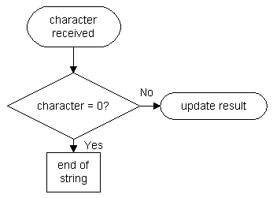

This one is mean. Like with the conversion from ASCII coded decimal to int, we need the file size to determine whether we're receiving a 8-, 16-, or even 32-bit number. If the string is sent most significant bit first, this is no problem, but if the value is sent least significant bit first, we need to store the entire string first (or need some neat trick). To determine the string end of a null-terminated string, the following check is necessary:

I'll only discuss the case of the string being sent most significant bit first here.
What is to be done? The bit is received, converted to a 'real' bit (1 or 0) and then shifted into the result.
| rcall receive_character tst character breq end_of_string clc subi character, '0' lsr character rol result |
; get the next character ; if it is zero, the string ended ; clear carry bit ; convert character to 1 or 0 ; shift least significant bit from converted character into carry bit ; and rotate it into the result |
What happens during the shift operations? These are most important for the conversion, as they combine the result with the converted character.
The lsr instruction shifts the byte one place to the right. The bit that is shtifted out is placed in the carry bit and the most significant bit is replaced by 0.
The carry bit is then rotated (rol) into the result: The most significant bit of the result is placed in the carry bit and the least significant bit is replaced by the old carry bit which we got from the character.
But how can we determine when to begin a new byte? We don't know the exact string length by now and have to start a new byte after 8 bits have been received and shifted into the result. The code above has to be altered so that it handles the highest possible number of bits that might be sent by the source of the string.
This can be done with multiple rol instructions. One for each byte, beginning with the least significant one:
| rol result_0 rol result_1 rol result_2 rol result_3 |
; get new bit into lowest byte of result ; rotate most significant bit of result_0 into result_1 ; rotate most significant bit of result_1 into result_2 ; and do the same with result_3 |
Now the bit from the character is shifted into the 32-bit result. Of course, the result can also be left 16 bits wide.
Make sure that the result is initialised to 0 before starting to shift in bits: Some bits might not be overwritten by the bits from the string!